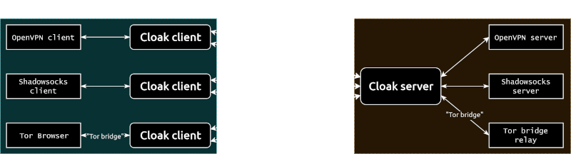

Shadowsocks + Cloak by Script
Cloak disguises a proxy or VPN server as a web server in order to evade deep packet inspection (DPI). The disguised server secretly implements Shadowsocks, OpenVPN, or Tor.
In this article, we deploy Shadowsocks and Cloak by using a pre-written script. This will be easier than manually issuing the instructions to install the software on the server.
1. Set Up Server
SSH into your server. Update your existing software. Make sure your firewall is open for TCP input on port 443.
In a browser, visit https://github.com/HirbodBehnam/Shadowsocks-Cloak-Installer. Copy the command to run the script.
Paste the command into your terminal emulator. Respond to the questions the script asks with your preferred answers.
At the end of its run, the script displays a QR code and ss:// link for configuring your client. You need to leave these up until you’ve used them to
configure your client.
2. Set Up Client
2.1. Android Client
If you have an Android client, install Shadowsocks for Android from https://github.com/shadowsocks/shadowsocks-android/releases.
Install Cloak for Android from https://github.com/cbeuw/Cloak-android/releases.
Open Shadowsocks for Android. Tap the button to add a profile. Use the option to scan the QR code generated by the script.
Visit a site such as https://whatismyipaddress.com to check that your are using your remote proxy server and not your local Android device to access the Internet.
2.2. Windows Client
Install Shadowsocks for Windows from https://github.com/shadowsocks/shadowsocks-windows/releases.
Download Cloak for Windows from https://github.com/cbeuw/Cloak/releases.
Rename the versioned Cloak client executable to simply ck-client.exe. Cut and paste the Cloak executable into the same folder as the Shadowsocks
executable.
Copy the ss:// link generated by the server installation script.
Launch Shadowsocks. Right-click on its icon in the system tray. Import the ss:// URL from your Windows clipboard.
Configure your Windows system or your individual browser to use the SOCKS5 proxy on 127.0.0.1, port 1080.
Visit a site such as https://www.dnsleaktest.com to check that your are using your remote proxy server and not your local PC to access the Internet.
2.3. Linux Client
If you have a Linux client, save the detailed parameters generated by the script.
Install Shadowsocks-Libev from the repositories.
Install Cloak from https://github.com/cbeuw/Cloak/releases.
Configure and run Cloak. It listens on localhost port 1984.
Configure and run Shadowsocks to use the server on 127.0.0.1 port 1984.
Configure Firefox to use the SOCKS5 proxy on 127.0.0.1, port 1080.
Updated 2021-06-24